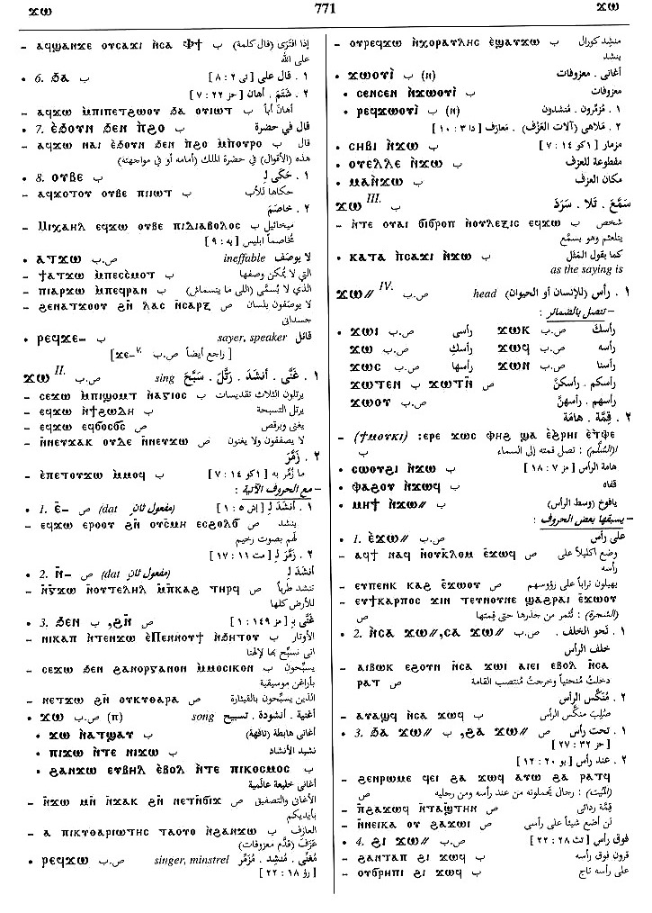

(verb)
intr: say, speak, tell [ερειν,
αντειπειν]
tr:
― [ειπειν, λεγειν, λαλειν]
― as for saying
| sing (same ?) S,A,sA,B,F
― tr: [αδειν]
― intr: [αδειν, υμνειν]
tr:
― [ειπειν, λεγειν, λαλειν]
― as for saying
| sing (same ?) S,A,sA,B,F
― tr: [αδειν]
― intr: [αδειν, υμνειν]
(S, sA, B, F, O)
ϫⲱ
(A, sA) ϫⲟⲩ
(sA) ϫⲟⲟⲩⲉ
(S, A, sA, B, F) ϫⲉ-
(S, A, F) ϫⲓ
(F) ϫⲁ-
(S, sA) ϫⲟⲟ=
(S) ϫⲓⲧ=
(S) imperative: ϫⲓ=
(A, sA, O) ϫⲓ=
(A) ϫⲉⲓ=
(sA, B) ϫⲟ=
(B) ϫⲟⲧ=
(F) ϫⲁ(ⲁ)=
(S) imperative: ⲁϫⲓ-
(S, A, sA, F) imperative: ⲁϫⲓ=
(A, sA, O) imperative: ⲉϫⲓ=
(A) imperative: ⲉϫⲉⲓ=
(S, B, F) imperative: ⲁϫⲉ-
(B) imperative: ⲁϫⲟ=, ⲁϫⲟⲧ=
(S, sA) p c ϫⲁⲧ-
(A, sA) ϫⲟⲩ
(sA) ϫⲟⲟⲩⲉ
(S, A, sA, B, F) ϫⲉ-
(S, A, F) ϫⲓ
(F) ϫⲁ-
(S, sA) ϫⲟⲟ=
(S) ϫⲓⲧ=
(S) imperative: ϫⲓ=
(A, sA, O) ϫⲓ=
(A) ϫⲉⲓ=
(sA, B) ϫⲟ=
(B) ϫⲟⲧ=
(F) ϫⲁ(ⲁ)=
(S) imperative: ⲁϫⲓ-
(S, A, sA, F) imperative: ⲁϫⲓ=
(A, sA, O) imperative: ⲉϫⲓ=
(A) imperative: ⲉϫⲉⲓ=
(S, B, F) imperative: ⲁϫⲉ-
(B) imperative: ⲁϫⲟ=, ⲁϫⲟⲧ=
(S, sA) p c ϫⲁⲧ-
| say, speak, tell3789 | Crum: 754a | ||||||||
| With following preposition:5349 | Crum: 754b | ||||||||
| ― ⲉ- | to
of, against vbal5350 |
||||||||
| ― ⲉⲧⲃⲉ- | 5351 | Crum: 755a | |||||||
| ― ⲉϫⲛ- | 5352 | ||||||||
| ― ⲛ- {dat} | 5353 | ||||||||
| ― ⲛⲥⲁ- | against5354 | ||||||||
| (B) ― ⲟⲩⲃⲉ- | 5355 | ||||||||
| ― ϩⲁ-, ― ϧⲁ- | 5356 | ||||||||
| ― ⲉϧⲟⲩⲛ ϧⲉⲛ-, ― ⲉϩⲟⲩⲛ ϩⲉⲛ- | 5357 | ||||||||
| (S) ⲁⲧϫⲱ | ineffable3790 | Crum: 755b | |||||||
| (S, B)
ⲣⲉϥϫⲉ-
(S) ⲣⲉϥϫⲓ- |
sayer, speaker3791 | ||||||||
| ϭⲓⲛϫⲟⲟⲥ, ϫⲓⲛϫⲟⲥ | saying, speech3792 | ||||||||
| (S, sA)
ϫⲉⲣⲟ-
(sA) ϫⲉⲣⲁ- (B) ⲝⲉⲣⲉ-, ϫⲉⲉⲣⲉ- |
mean (from ϫⲉ ⲉⲣⲟ=)3793 | ||||||||
| (S, sA, B)
ϫⲉⲣⲟ=
(B) ϭⲉⲣⲟ= (F) ϫⲉⲗⲁ= |
say to3794 | ||||||||
| sing3795 | |||||||||
| With following preposition:8221 | Crum: 756a | ||||||||
| ⲉ- (c) | 8222 | ||||||||
| ⲛ- (c) | 8223 | ||||||||
| ϩⲛ- (c) | 8224 | ||||||||
| (S, A, B, F)
― (ⲡ)
(B) ϫⲱⲟⲩⲓ (ⲛ) |
(noun male)
song [ασμα, υμνοσ]3796 |
||||||||
| (S, B)
ⲣⲉϥϫⲱ
(S) ⲣⲉϥϫⲟⲟⲩⲉ (ⲛ) (B) ⲣⲉϥϫⲟⲟⲩⲓ (ⲛ) |
singer, minstrel [αυλητησ]3797 | ||||||||
See also:
- (S, B, F) ⲡⲉϫⲉ- (A, sA) ⲡⲁϫⲉ- (O) ⲡⲉⲧϣⲁ-, ⲡⲉϣⲁ-
- (S) ϣⲁϫⲉ (Sa, A, sA) ϣⲉϫⲉ (sA) ⲥⲉϫⲉ (B) ⲥⲁϫⲓ (F) ⲥⲉϫⲓ
- (S) ⲧⲁⲩⲟ, ⲧⲁⲟⲩⲟ, ⲧⲁⲩⲱ, ⲧⲁⲟⲩⲟⲩⲟ, ⲧⲁⲃⲟ (Sa, A, sA) ⲧⲉⲩⲟ, ⲧⲉⲟⲩⲟ (F) ⲧⲁⲟⲩⲟ (F) ⲧⲁⲟⲩⲁ
- (S, A, sA, F, O) ϫⲛⲟⲩ (S) ϫⲓⲛⲟⲩ, ϫⲛⲟ (B) ϭⲛⲟⲩ (F) ϫⲉⲛⲁ
- (S, A, sA, B, F, O) ϫⲉ- (S, A, F) ϫ-, ϫⲉ- (S, B, F) ⲛϫⲉ- (NH) ϫⲏⲉ-
Crum: 754,755,756

754

755

756
Dawoud: 770b-771b,
736a-736b, 755b,
17a

770

771

736

755

17